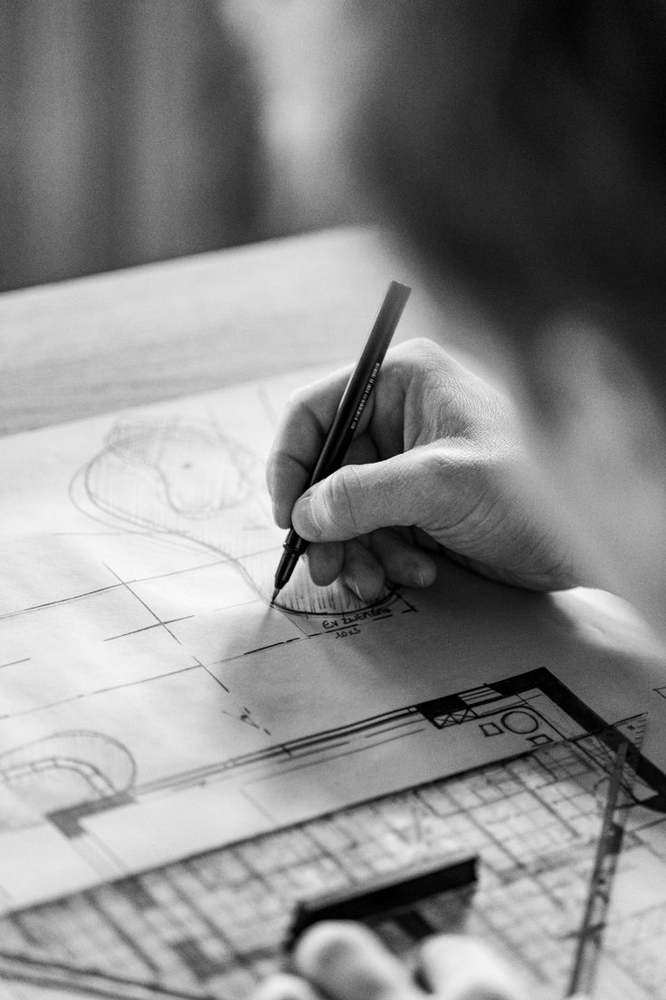

- Born:
- February 28, 1929 — Toronto, Ontario, Canada
- Died:
- December 5, 2025 — Santa Monica, California, US (age 96)
Gehry started with chain-link, corrugated metal and raw plywood, the materials of builders’ yards and parking lots. His own house in Santa Monica, wrapped around an existing bungalow, turned those cheap parts into a public argument about what a house could be made of.
Later work moved to curved titanium and stainless steel, first shaped as crumpled paper and wood models, then translated into buildings with software borrowed from aircraft design. The process began with the hand and the model; the computer came afterward to make each shape buildable and to price it.